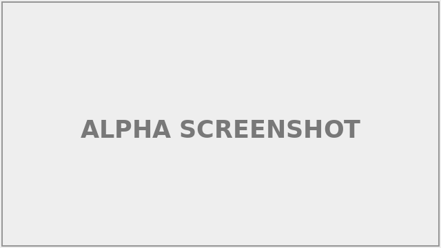
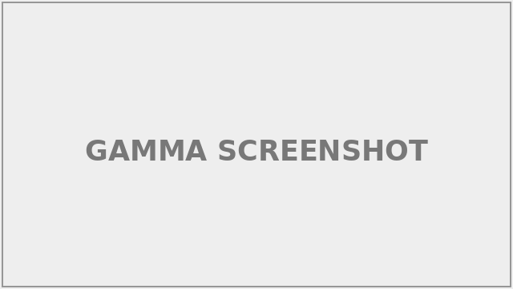

TrailMate
A hiking-trail logging app with route history and personal notes.
I’m a computer science student who likes building small, actually useful web tools end-to-end — front end, back end, and everything in between.

A hiking-trail logging app with route history and personal notes.

An interactive canvas app that animates sorting algorithms step by step.

A small full-stack app that matches classmates into study groups.